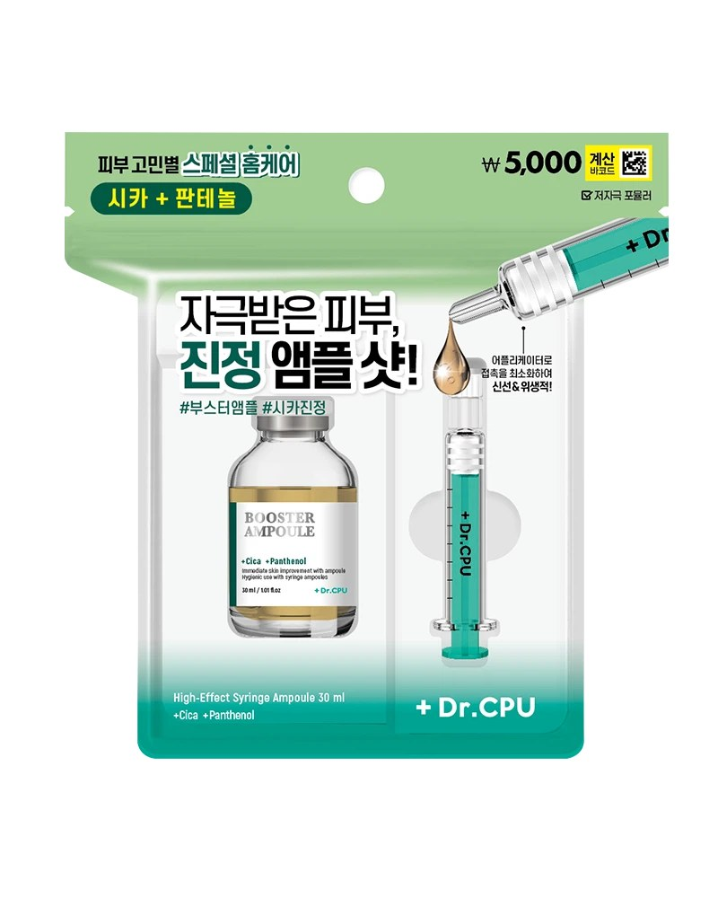

닥터CPU 물광앰플샷
다이소 닥터CPU 물광앰플샷 — 휴대용 수분 앰플.
닥터CPU 물광앰플샷은 다이소에서 파는 소용량 수분 앰플입니다. 균일가라 여러 개 담기 좋고, 여행·선물용 스킨케어로 자주 집습니다.
액체류라 기내 수하물 100ml 제한을 확인하고, 파우치에 넣어 새지 않게 하세요. 피부 자극이 있으면 사용을 중단하세요.
닥터CPU 물광앰플샷은 다이소에서 파는 소용량 수분 앰플입니다. 균일가라 여러 개 담기 좋고, 여행·선물용 스킨케어로 자주 집습니다.
액체류라 기내 수하물 100ml 제한을 확인하고, 파우치에 넣어 새지 않게 하세요. 피부 자극이 있으면 사용을 중단하세요.
사는 팁
구매 팁 다이소몰·매장 키오스크에서 ‘물광앰플’로 검색해 보세요.